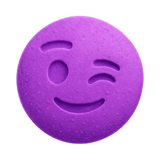

Ecstacy Anticheat
Media Manager
Anticheat'in dış yüzünü yönetiyorum — tanıtım içerikleri, tespit videoları, sürüm duyuruları ve topluluk iletişimi. Bir hilenin nasıl yakalandığını insanların anlayacağı şekilde göstermek işin en keyifli kısmı.